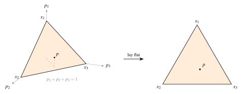
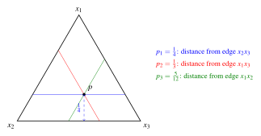
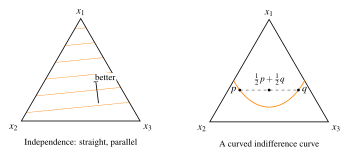
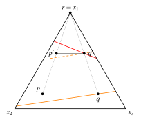
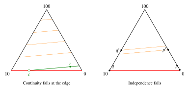

October 20, 2026
Notes I wrote after the session for future teaching assistants of ECON 600. Internal file references, a short problem-set follow-up and comments on a past answer key have been removed.
These notes document what was covered in the tutorial session, for the benefit of future TAs. They are not intended as study material for students.
The move from choice over goods to choice over lotteries. (i) The independence axiom, read off the probability simplex: what the simplex is and how to locate a lottery in it, why independence forces indifference curves to be straight and parallel, and how independence lets one “cancel” a common component of two lotteries. (ii) The continuity axiom for lotteries, and the one-directional use of its main consequence. (iii) A past exam question in which a lottery is valued by a weighted average of its mean and the top of its support: whether these preferences are rational, continuous and independent, worked through on the simplex. The session closed with advice on how much to write for discussion questions on an exam.
The formal statements of the axioms are on the lecture slides and in MWG Section 6.B. The figures at the end are reference sketches for a future TA preparing the board work.
The unifying theme of the expected-utility half is that the simplex is the working diagram for any question about axioms on lotteries, in the same way the two-good budget diagram was for consumer theory. Students who can draw the simplex fluently can see in a few seconds where a preference fails an axiom — on a curved indifference curve, at a non-parallel pair, at a jump on an edge — and then write down a counterexample built from exactly the lotteries they were looking at. The second half of that sentence matters as much as the first. The session made a point of drawing the picture first, saying explicitly that the picture is not a proof, and then turning it into one.
This also connects back to Tutorial 2, where continuity of preferences over goods was the subject and the lexicographic order the counterexample. The failure of continuity in the exam question has the same shape: a preference that is perfectly well-behaved in the interior and jumps on a boundary. Saying so explicitly lets students reuse an intuition they already have.
Reading the simplex. I introduced the simplex as the set of probability vectors in three dimensions, the triangle cut out of the positive orthant by the plane where the probabilities sum to one, and then laid it flat. Each vertex is a sure outcome, and a lottery’s probability on an outcome is its distance from the opposite edge, scaled so that the vertex is at distance one. I justified the last claim with a similar-triangles argument on the three-dimensional picture and then had the class locate a specific lottery (probabilities one quarter, one third and five twelfths) by drawing the three lines parallel to the edges.
The similar-triangles derivation is the most compressible part of the session: the claim can be asserted, and the locating exercise is what students actually need to be able to do under exam conditions. The one-line version to leave them with is that “the probability of an outcome is how far you are from the edge where that outcome is impossible.”
Independence: straight and parallel. Stated as: indifference curves in the simplex are straight lines, and they are parallel. I gave the two halves separately, since they use independence differently.
Straight lines: if two lotteries are indifferent, independence makes every mixture of them indifferent to both, so the indifference set through them contains the segment joining them. A curved indifference curve would require some point on that segment to be off the curve, which independence rules out. I drew a curved curve through two indifferent points and asked what independence says about the points on the segment between them, which made the contradiction visible immediately.
Parallel: take two lotteries with one strictly preferred, and mix both with the same third lottery using the same weight. The two mixtures sit on a segment that is a scaled copy of the original segment, shrunk toward the third lottery, so by similar triangles it is parallel to the original. Independence says the ranking of the mixtures is the ranking of the originals. If indifference lines were not parallel, then for a weight small enough the two mixtures would land on opposite sides of some indifference line in the wrong order. The picture to draw is a fan of non-parallel lines with the segment shrinking toward the third lottery until its endpoints straddle a line the wrong way round.
One caveat to keep in mind: I stated the result as an “if and only if,” which is fine in the three-outcome picture for a complete and transitive preference, but students should not take the converse as a proof strategy outside the simplex. On an exam, independence is verified or refuted from the definition.
Cancelling a common component. I used independence to simplify a comparison: a preference between the lottery with probabilities one quarter, one third and five twelfths and the uniform lottery, which I then presented as “subtracting” half the uniform lottery from both sides and rescaling. The arithmetic is right — the first lottery is an equal mixture of the uniform lottery and the lottery with probabilities one sixth, one third and one half — but the subtract-and-rescale framing passes through objects that are not lotteries, since the intermediate vectors no longer sum to one. A future TA should present it the other way round: write each lottery as a mixture with a common component, then apply the axiom. That is exactly what the definition licenses, and it avoids giving students the idea that lotteries can be subtracted.
Continuity and its consequence. Stated in the MWG form: for any three lotteries, the set of mixing weights at which a mixture of the first two is at least as good as the third is closed, and so is the set at which it is at most as good. The consequence I emphasised is that if the third lottery lies between the first two in the ranking, some mixture is exactly indifferent to it.
The point that needs saying out loud is that this consequence can only be used in one direction. Showing that no indifferent mixture exists proves that continuity fails. Exhibiting an indifferent mixture proves nothing, since the axiom is a statement about closedness for every triple, not existence for one. Proving continuity by finding an indifferent mixture is the natural mistake, and it is worth naming it as the failure mode before students make it.
A related trap, which the board work brushed against: the axiom is not the same as closed contour sets, so a non-closed upper contour set does not by itself refute it. See the bonus note below.
The exam question. The preference values a lottery at a weighted average of its mean and the top of its support. I wrote it in class with an unnormalised weight (the mean plus a multiple of the top outcome) and a specific weight of one tenth; the two forms represent the same family of preferences after rescaling.
Rationality is immediate: any real-valued representation gives a complete and transitive order. Continuity and independence were done on a simplex with outcomes 100, 10 and 0. In the interior of the simplex, every lottery puts positive probability on 100, so the top of the support is constant and indifference curves are the parallel lines of the expected value. On the edge opposite the 100 vertex the top of the support drops discontinuously, so the edge is a different regime. I first gave the argument as a picture — an indifference line from an interior lottery reaches the bottom edge at a point drawn as an open circle, because that point has lost its upside and is strictly worse — and then said explicitly that the picture is not a proof, and that the task is to turn it into a counterexample with specific lotteries. The independence failure has the same source. Take a lottery that puts a sliver of probability on 100, so that it already collects the bonus for the top outcome, and a bottom-edge lottery with a higher mean that is ranked below it only because it lacks the bonus. Mixing both with the 100 vertex gives the second lottery the bonus too, the ranking reverts to expected value, and it reverses. A future TA should be careful here: mixing two bottom-edge lotteries with the 100 vertex does not produce a reversal, since both are ranked by their means before and after, and that is the configuration one is tempted to draw first.
For continuity, a construction using sure lotteries over 0 and 10 is simpler than the one I gave in class. The question also asks whether the preference has an expected-utility representation. It does not, since independence fails, and students should be told to state that explicitly rather than leave it implied.
How much to write. I ended with advice for the exam: discussion and interpretation questions want a good-enough answer of about three lines, not an essay. That advice is worth giving every year, before the midterm, and worth tying to the “what does the parameter represent” part of this question as an example of the right length.
On ordering: the simplex has to come before both axioms, since everything afterwards is drawn on it; and the exam question goes last because it uses both axioms and the simplex at once. If time is short, cut the similar-triangles derivation of the simplex coordinates and the cancellation example, in that order. The parallel-lines picture and the exam question are what justify the session.
Not covered in the session, but a question a future TA should be ready for, since the board work came close to it. Is the continuity axiom for lotteries — closedness of the sets of mixing weights at which a mixture of two lotteries is at least as good as, or at most as good as, a third — equivalent to the upper and lower contour sets being closed in the simplex? It is not.
One direction holds. The map from a mixing weight to the corresponding mixture is continuous, and the axiom’s sets of weights are exactly the preimages of the contour sets under it, so closed contour sets imply the axiom.
The converse fails, because the axiom only constrains the preference along line segments, and a function can be continuous along every line without being continuous. The standard example is \(f(x,y) = x^2y/(x^4+y^2)\) with \(f(0,0)=0\). Restricted to any line it is continuous, but along the parabola \(y=x^2\) it is constant at one half while the parabola runs into the origin, where \(f=0\). Place it around an interior point of the simplex and it represents a complete and transitive preference that satisfies the axiom, while its upper contour set at level one half is not closed.
The gap disappears once independence is added. Independence and the axiom together give an expected-utility representation, which is linear in probabilities and therefore has closed contour sets. So for preferences that satisfy independence the two notions coincide, and the distinction only matters when checking a preference that may fail independence — which is exactly the situation in the exam question.
The practical consequence for students is that exhibiting a non-closed upper contour set is not, on its own, a refutation of the axiom; the failure has to be shown along a segment of mixtures. In the exam question this is easy, because the offending sequence can be taken along a single indifference line ending at the bottom edge (the left panel of Figure 4). If students write the argument as “upper contour set not closed” on an exam, it should be tightened to name the segment.
Sketches of the board work, drawn to scale so that a future TA can check a picture before putting it up. Throughout, the simplex is equilateral, so a lottery’s probability on an outcome is its distance from the opposite edge as a fraction of the triangle’s height.




For the exam question the vertices are the sure outcomes 100 (top), 10 (bottom left) and 0 (bottom right). Every lottery off the bottom edge has 100 in its support, so there the value is \((1-\beta)\) times the mean plus the constant \(100\beta\), and the indifference curves are the lines of constant mean. These are almost horizontal, since the mean rises steeply toward the top vertex. On the bottom edge the top of the support falls to 10 (or to 0 at the bottom-right vertex), and the value drops.
